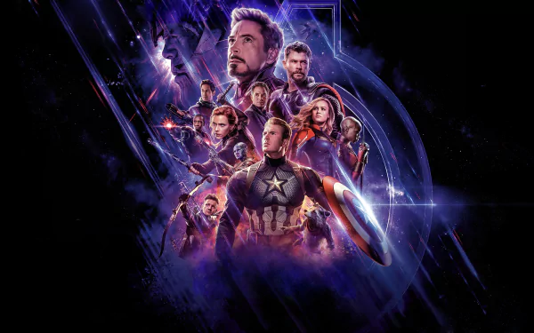
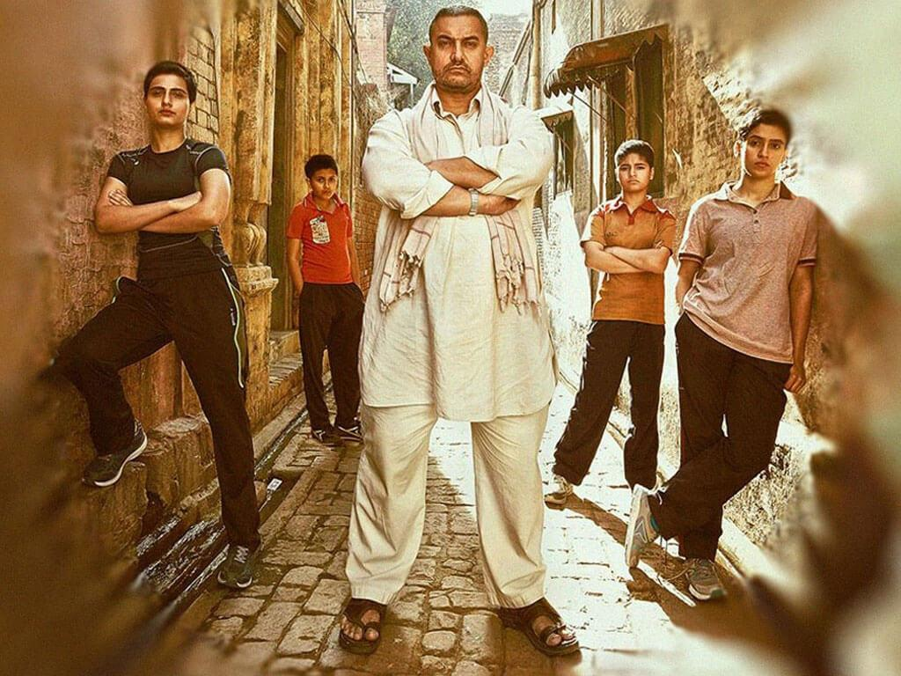

List of few All time blockbuster Movies from Different Industries
Avengers:Endgame

Released:2019
Avengers: Endgame is a 2019 American superhero film based on the Marvel Comics
superhero team the Avengers. Produced by Marvel Studios and distributed by Walt Disney Studios
Motion Pictures, it is the direct sequel to Avengers: Infinity War (2018) and the 22nd film
in the Marvel Cinematic Universe (MCU).
Genre:
Description:
Avengers: Endgame was released in April 2019 and went on to break
numerous box office records in various markets. Worldwide, it set the record for highest-grossing film of all time.
It also set the records for the highest-grossing opening weekend in total as well as in the IMAX and 3D formats.
The film made more money in the box office in its debut weekend than any other movie in history, and its opening day
was the highest grossing of all time. Endgame became the highest-grossing movie in history on July 21, 2019,
after 89 days of release. It surpassed Avatar's record as the highest-grossing movie of all time.
Endgame was the fourth Avengers film and the 22nd film in the Marvel Cinematic Universe (MCU), released seven years after
the first Avengers film and eleven years after the first MCU film.
Justice league
Released:2017
Justice League is a 2017 American superhero film based on the DC Comics superhero team of the same name.
Produced by Warner Bros. Pictures,Directed by Zack Snyder .In the film, following the events of
Batman v Superman: Dawn of Justice (2016),Batman and Wonder Woman recruit The Flash,
Aquaman, and Cyborg after the death of Superman to save the world from the catastrophic
threat of Steppenwolf and his army of Parademons.
Genre:
Description:
Justice League premiered in Los Angeles on November 13, 2017, and was
released in the United States four days later. The film grossed $657.9 million worldwide against an assumed
break-even point of $750 million, becoming a box office bomb and losing Warner Bros. an estimated $60 million.
It was directed by Zack Snyder and written by Chris Terrio and Joss Whedon. The film features an ensemble
cast including Ben Affleck, Henry Cavill, Amy Adams, Gal Gadot, Ezra Miller, Jason Momoa, Ray Fisher,
Jeremy Irons, Diane Lane, Connie Nielsen, and J. K. Simmons. In the film, following the events of
Batman v Superman: Dawn of Justice (2016) Batman and Wonder Woman recruit The Flash, Aquaman, and
Cyborg after the death of Superman to save the world from the catastrophic threat of Steppenwolf and
his army of Parademons.
Dangal

Released: 23 December 2016
Dangal "Wrestling Competition" is a 2016 Indian Hindi-language biographical sports drama film directed by
Nitesh Tiwari and produced by Aamir Khan and Kiran Rao under Aamir Khan Productions with Siddharth Roy Kapur
under The Walt Disney Company India.
Genre:
Description:
It was released worldwide on 23 December 2016 and received
positive reviews from critics, with praise centered on the film's “honest” depiction of
a real-life story and Khan's performance. At the 62nd Filmfare Awards, it won four awards:
Best Film, Best Director, Best Actor (Khan) and Best Action (Shyam). At the 64th National Film Awards,
Wasim won Best Supporting Actress for her portrayal of Geeta's younger self. Overseas,
Dangal won the inaugural Best Asian Film award at Australia's 7th AACTA Awards. The movie opened in
theatres across India on Day One with an ebullient mood among masses. They trooped in droves with
positive anticipation and excited with extreme satisfaction after having watched a phenomenally well-made movie
Chennai Express
Released:2017
Chennai Express is a 2013 Indian Hindi-language action comedy film directed by Rohit Shetty.
It stars Shah Rukh Khan and Deepika Padukone with Nikitin Dheer, Sathyaraj, Kamini Kaushal and Lekh Tandon in supporting roles.
The film revolves around Rahul Mithaiwala, a rich man who accidentally boards the eponymous train and
journeys from Mumbai to Rameswaram with the daughter of an influential don.
Genre:
Description:
Shah Rukh Khan's success in Chennai Express was phenomenal.
The film broke several box office records in India and abroad, becoming the quickest film to collect ₹1 billion (US$17.07 million)
net domestically. It surpassed 3 Idiots (2009) to become the highest-grossing Bollywood film worldwide at that point.
At the 59th Filmfare Awards, Chennai Express received 7 nominations, including Best Film, Best Director (Shetty),
Best Actor (Khan) and Best Actress (Padukone). Shah Rukh Khan was extremely glad and thrilled about the success of this film.
He packed action and romance together, marketed it in his unique way and managed to hit the right note.
The success of Chennai Express added another feather to Shah Rukh Khan's already illustrious career.
Soorarai Pottru
Released:2017
JSoorarai Pottru (Praise the Brave) is a 2020 Indian Tamil-language drama film
written and directed by Sudha Kongara, and co-produced by Suriya, Jyothika and Guneet Monga.
The film stars Suriya, Aparna Balamurali and Paresh Rawal; and Mohan Babu, Urvashi and Karunas appear in supporting roles
Genre:
Description:
The film received critical acclaim, with praise for the film's major technical aspects
and appreciation for the writing, Suriya's performance and Kongara's direction. It was selected as one of ten Indian films
to be screened in the category Best Foreign Film at the 78th Golden Globe Awards. The film also entered the Panorama Section
of the Shanghai International Film Festival. It won five awards at the 68th National Film Awards: Best Feature Film, Best Actor (Suriya),
Best Actress (Aparna), Best Screenplay (Kongara and Nair) and Best Background Score (Prakash Kumar).
Soorarai Pottru has won a total of 48 awards and received 77 nominations.
Vikram
Released:03 Jun 2022
Vikram is a 2022 Indian Tamil-language action thriller film written and directed by Lokesh Kanagaraj.
Kanagaraj and Rathna Kumar worked together on the dialogues in this film. It is produced by Kamal Haasan
who stars in the titlular role, along with Vijay Sethupathi and Fahadh Faasil with Narain and Kalidas Jayaram
in the supporting roles.
Genre:
Description:
Vikram is a Tamil action film that was released on June 3 and has
emerged as one of the most successful Tamil films of all time. The film stars Kamal Haasan,
Vijay Sethupathi and Fahadh Faasil in lead roles and is directed by Lokesh Kanagaraj.
It has already grossed over ₹ 364 crore worldwide and is the highest-grossing Tamil film of the year.
The film ran well not only in Tamil Nadu but also in Andhra Pradesh, Kerala and Telangana as it was dubbed in other
Indian languages as well. 'Vikram' is also the first highest Tamil grosser film in the UK and Australia reportedly.
The film is still running in theatres successfully and is reportedly nearing to gross Rs 400 crore in the
box office collection globally.